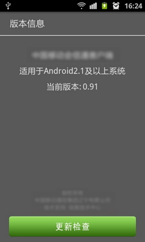

项目简介
“会信通”客户端，为会议召开提供相应的信息服务，包括会议日程、住宿、用餐情况查询，会议资料下载等功能。为参会人员提供全方位高效、实时、安全的会议信息服务。
主要功能简介
参会者登录客户端后，进入会议前，客户端会为参会者展示该会议的宣传图片。可显示会议名称、时间、地点、联系人等信息。点击图片可进入会议九宫格页。
会议九宫格为展示会议各类信息的通道，通过九宫格内各个功能图标，可查看不同的信息。
会务信息：描述会议的基本情况及会务组信息，可使参会人员大体了解大会的基本信息。
参会名单：以列表形式展示参会的组，点击组后可以查看具体参会人员以及人员信息。
日程安排：展示会议的日程安排时间表，包括会议时间表、活动时间表、交通时间表、就餐时间表、住宿时间表，以及各时间表详细信息。
会议资料：会议组织者，可以将需要发布给参会者的相关资料上传到会议资料模块，以供参会者下载、查看。
会议报道：显示会议报道列表，如某条会议报道上传了图片，则还会显示该图片的缩略图。点击会议报道列表，可进入该条会议报道的详细信息。
会议评论：显示评论话题列表，列表内容包括：各个评论区，发布的时间及进行评论的人数；点击评论区可进入评论内容列表，以及发表自己的评论。
笔记：笔记支持文本输入，可进行会议记录。笔记与会议无关，只与用户相关，关联手机号码。无会议也可以使用笔记功能。用户只能查看自己的笔记。

管理后台
系统菜单中有“版本”、“在线升级”、“意见反馈”、“帮助”、“退出”、“注销”等操作。
